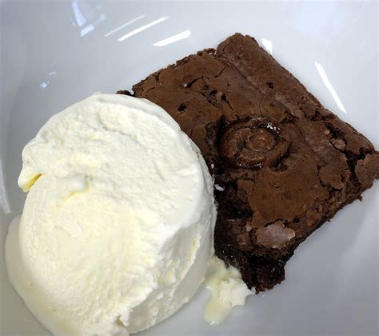

Odin Recipies
Brownie

Description
WHAT IS UP PEOPLEEEE, it's yer boy vjay here again with some bonkers recipe. This time it's going to be the most godsend dish
that I have ever tasted. Vanilla and sizzling brownie MWAHH. If you get a chance to do this dish... , forget it YOU ARE MAKING IT NOW!!!!!
You know what if you are making this for me, Im falling in love with you guaranteed 100/100 times.
Ingredients
- 2 Eggs
- 1/2 cup of all purpose flour
- 1/2 cup of powdered sugar
- Unsweetened cocoa powder
- Butter
- 1/2 tsp Vanilla Extract
- Salt as per req
- A LOT OF ICE CREAM preferably vanilla :p
Steps
- Mix the dry ingredients in a separate bowl and liquidy ingredients on another bowl
- Then mix both the ingredients together and mix until the batter becomes thick enough
- Spread a parchment paper in a 8x8 inch baking pan and pour the batter on the baking pan
- Preheat the oven for a bit and then transfer the baking pan, bake it at 325 Fahrenheit for 40 to 45 mins
- To know whether the dish is done, check it using a toothpick and if it comes out with few crumbs attached it's done
- Now let it rest until it's not TOO hot, then slice it up scoop up some ice cream and enjoy :D
- You can store the rest and just heat them for a while in the oven and enjoy it hehe
I pray to the brownie god that I get to enjoy this dish atleast once every week, Namu Amida Butsu.
I hope yall had a wonderful time making and eating this. Don't share it with anyone :p.
© All rights reserved by NONE